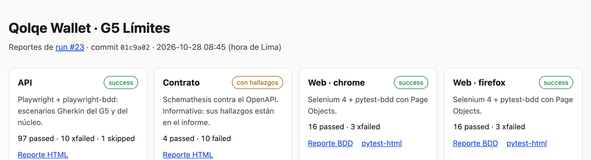

CS5383 · Proyecto 2 · Parte 2
Pruebas E2E de la interfaz, un pipeline que las corre solo
y trazabilidad de cada historia hasta su ejecución
Contexto
Qolqe es una billetera digital ficticia que da el curso. La probamos sin tocar su código.
G5: el límite diario de transferencias y las alertas de consumo. 8 historias, más el núcleo de la cuenta.
108 escenarios de API en Gherkin con Playwright, contrato con Schemathesis y 9 defectos reportados.
La Parte 2 agrega lo que faltaba: probar lo que ve el cliente en la pantalla y que todo corra solo en cada cambio.
Contexto
Todos los criterios definidos como web, automatizados
Selenium + pytest-bdd · lámina 4Patrón mantenible, sin esperas fijas; pasa 3 veces seguidas
Page Object · lámina 5Pipeline en cada push o PR: API + web en verde, con reportes publicados (y Schemathesis)
GitHub Actions · láminas 6 a 9Trazabilidad HU → casos → ejecución, con los resultados del pipeline
láminas 10 y 11Pedido en clase: más casos de límites y ver qué prueba Schemathesis que nosotros no
láminas 13 y 14Exposición con demo en vivo: el run, el reporte y la matriz
lámina 151 · Pruebas web
| HU | Escenario de interfaz | Caso |
|---|---|---|
| G5-01 · 02 · 04 | Ana baja su límite diario y crea una alerta de recargas (flujo feliz) | CP-57 |
| G5-02 | Un aumento entra en vigencia 24 horas después · bajar el límite pausa la alerta que queda encima | CP-58 · 59 |
| G5-03 | Una transferencia que supera el límite diario es rechazada | CP-60 |
| G5-04 | Validación del umbral al crear una alerta (6 ejemplos) · “Todos mis gastos” no supera el límite | CP-64 · 65 |
| G5-06 · 07 | Pausar, reanudar y eliminar una alerta · editar su umbral | CP-62 · 63 |
| G5-08 | Ana recibe un SMS al alcanzar el umbral de su alerta | CP-61 |
| DEF-01 · 02 · 03 | Los tres defectos del G5, vistos como los vería un cliente: fallan a propósito | CP-67 a 69 |
15 casos en features/ui/limites_ui.feature, Gherkin en español, más 3 de defectos conocidos. De las que el informe marcó como web, G5-06 y G5-07 están completas; G5-05 se ve en pantalla (tipo, umbral y estado), pero el gasto de hoy por alerta se verifica por API.
1 · Pruebas web
tests/e2e/pages/limites_page.py · test_limites_ui.py
class LimitesPage(BasePage): LIMITE_DIARIO = tid("limite-diario") NUEVO_LIMITE = tid("input-nuevo-limite") def esperar_carga(self): self.espera.until(lambda d: ...text) # el paso solo dice la intención@when("cambia su límite diario a S/ {monto}")def cambia_limite(driver, monto): LimitesPage(driver).cambiar_limite(monto)
Una clase por pantalla. Los selectores (data-testid) viven en un solo lugar: si cambia un botón, se arregla una línea.
WebDriverWait espera a que la pantalla muestre el dato. No hay sleep en ningún paso.
Seis runs seguidos en verde (#21 a #26), en Chrome y en Firefox.
2 · Pipeline
Si la API falla, no se gasta en la interfaz: web y contrato quedan como skipped. Archivo: .github/workflows/pruebas.yml.
2 · Pipeline
| Job | Qué corre | Qué deja | ¿Bloquea? |
|---|---|---|---|
api | Escenarios Gherkin de API | Reporte HTML, JUnit XML y JSON | Sí |
web × 2 | Escenarios de interfaz en Chrome y Firefox, sin ventana | Reporte BDD con captura por paso, pytest-html y JUnit | Sí |
contrato | Schemathesis contra /openapi.json | Reporte HTML y JUnit | No: sus hallazgos ya están analizados |
reportes | Junta todo y arma la portada y la matriz | Sitio en Pages y la matriz en el resumen | — |
Además, cada job escribe una tabla en la página del run ($GITHUB_STEP_SUMMARY): se ve qué pasó sin descargar nada.
2 · Pipeline

2 · Pipeline
| Condición | Cómo se automatiza |
|---|---|
| Todas las pruebas de API y web pasan | El step termina con error si alguna falla |
| Los fallos conocidos están reportados | @fail en Playwright y xfail estricto en pytest, cada uno con su @DEF-NN. Si un defecto se arregla, la prueba también falla y avisa |
| No hay pruebas frágiles sin investigar | En CI, Playwright reintenta una vez; si al reintentar pasa, falla igual (failOnFlakyTests) |
Nadie deja un test.only olvidado | forbidOnly en CI |
| Un PR en rojo no entra a main | Protección de rama con api, web (chrome) y web (firefox) obligatorios |
3 · Trazabilidad
conftest.py las escribe como propiedad del JUnit XML.github/scripts/trazabilidad.py cruza los .feature con esos resultados: cada run produce su propio ciclo de ejecución, con fecha, commit y evidencia3 · Trazabilidad
| HU | Caso | Nivel | Resultado (run #26) |
|---|---|---|---|
| HU-G5-01 | CP-01 Veo mis límites con lo usado y lo disponible del día | api | passed |
| HU-G5-02 | CP-02 Validación del nuevo límite diario (valores límite) | api | passed 8/8 |
| HU-G5-02 | CP-06 Una reducción cancela el aumento pendiente | api | xfailed → DEF-01 |
| HU-G5-02 | CP-67 Una reducción del límite cancela el aumento programado | web | chrome · firefox: xfailed → DEF-01 |
| HU-G5-04 | CP-64 Validación del umbral al crear una alerta | web | chrome 6/6 · firefox 6/6 |
| HU-G5-02 | CP-72 Un segundo aumento reemplaza al aumento pendiente | api | passed |
| HU-G5-07 | CP-82 Eliminar una alerta con un identificador que no existe | api | passed 2/2 |
Extracto. La matriz completa (núcleo y G5, 93 filas) está publicada en Pages y en docs/trazabilidad.md. Amarillo: falla por un defecto ya reportado.
4 · Resultados
El 1 escenario omitido en API es de concurrencia y va a la Parte 3 (rendimiento). Seis runs seguidos en verde: #21 a #26.
4 · Resultados
| Caso | Regla que prueba | Resultado (run #26) |
|---|---|---|
| CP-72 | Un segundo aumento reemplaza al aumento pendiente (R-G5-02) | passed |
| CP-73 | Mientras el aumento está pendiente, al transferir rige el límite anterior | passed |
| CP-75 | El límite diario se reinicia al día siguiente, con el reloj de la app | passed |
| CP-76 a 80 | Editar el umbral, reanudar y pausar una alerta por API (HU-G5-06) | passed 8/8 |
| CP-83 · 84 | Interbancaria cuenta sin comisión · la alerta TODAS suma recargas y transferencias (R-G5-05) | passed |
| CP-82 · 85 | Id que no existe o fuera de rango · alertas sin token. Salieron de Schemathesis | passed 6/6 |
CP-70 a CP-85 en features/limites.feature: 16 escenarios, 25 casos con sus ejemplos. Todos pasan: la app cumple esas reglas.
4 · Resultados
| Operación | Nuestros escenarios | Schemathesis | Lectura |
|---|---|---|---|
GET /api/limites/alertas | 200 · 401 | 200 · 401 | cubierto (CP-85) |
DELETE /api/limites/alertas/{id} | 204 · 401 · 404 · 422 | 204 · 401 · 404 · 422 | hallazgo ya cubierto (CP-82) |
PUT /api/limites | 200 · 401 · 422 | 200 · 401 · 422 · 405 | falta 405: solo OPTIONS |
GET /api/transferencias/comision | 200 | 200 · 401 · 422 | faltan 401 y 422 (núcleo) |
Sale de los logs de la app: cada solicitud se lleva a su operación del OpenAPI y se cuentan los códigos que provocó cada suite (.github/scripts/cobertura_contrato.py). Se publica en Pages en cada run de main. Los huecos del G5 se cerraron con CP-82 y CP-85.
5 · Demo en vivo
Actions › Pipeline › Run workflow. Se ven los jobs por etapas y el resumen de cada uno.
kaloslazo.github.io/qolqe-wallet → reporte BDD de Chrome: pasos, captura por paso y los 3 defectos en amarillo.
En la misma portada: cobertura por historia y el resultado de cada caso en ese run.
scripts/selenium.sh demo
Chrome hace el flujo feliz solo, resaltando cada elemento.
6 · Cierre
Salió pytest 9.2 y rompió pytest-bdd: los 15 escenarios web cayeron en CI con nuestro código intacto. En local seguía todo verde.
Lo vimos en el primer push, fijamos pytest < 9.2 con el motivo en un comentario y el pipeline volvió a verde.
github.com/kaloslazo/qolqe-wallet
kaloslazo.github.io/qolqe-wallet